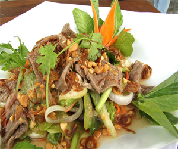
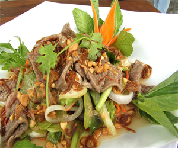
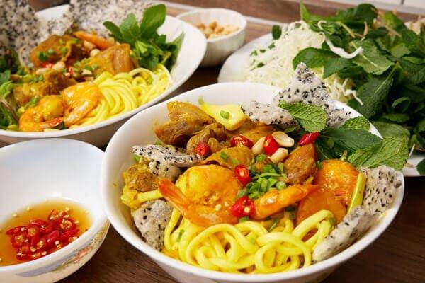
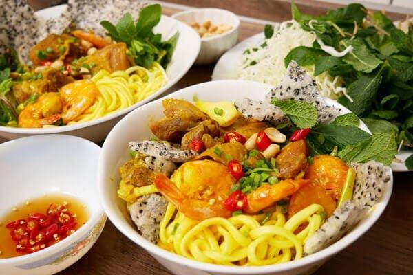

 

Without a doubt, the most underrated dish in Vietnam is Mi Quang. Mi quang may be available at most restaurants in Vietnam, but it actually originates from Da Nang. Easily distinguished by its yellow-coloured rice noodles, this dish is a hearty mix of bone broth seasoned with fish sauce, black pepper, shallot, and garlic, as well as meaty ingredients such as river shrimp, boiled quails eggs, and roast pork.
There is no correct way to cook Mi Quang – it really depends on your tastes and preferences. To most of Danangians, the best Mi Quang is home-made by their mothers or grandmothers, attached with love and memories. Mi Quang brings out the feeling of genuineness and simplicity just like the people in Central Vietnam, one that is hard to come across in the modern dishes
Another famous Vietnamese food is spring rolls. It’s usually served as an appetizer at restaurants in Vietnam. This healthy food is a smart choice for you when you’ve eaten too much of the fried food in Vietnam. Spring rolls have meat, rice noodles, shrimp or other seafood and a layer of vegetable. It’s gently rolled with ricepaper. You eat it with fish sauce. It costs 8.000 VND per roll. You will absolutely like it.
Fried spring roll was brought to Hanoi from the Southern part of vietnam and this dish has rapidly become a favorite one of Hanoian, and to express the affection as well as to remember the real origin of the dish, people here call it “Nem Sai Gon”.